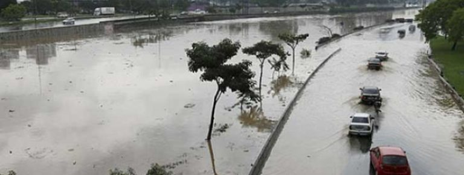

Serviços do Saneamento Básico

Distribuição de Água Potável
Mesmo com toda essa abundância de água não significa que ela seja suficiente para todos.
Ainda existe uma enorme desigualdade de abastecimento de água entre as cidades brasileiras. Um exemplo que pode ser citado é São Paulo, a demanda é muito elevada e o desperdício vem na mesma proporção por conta de uso inadequado e às instalações precárias.
No Brasil, em torno de 83,3% dos brasileiros são atendidos com abastecimento de água. Por outro lado, mais de 35 milhões de pessoas ainda não possuem acesso a este serviço básico de saneamento.

Coleta e Tratamento de Esgoto
Com relação ao tratamento de esgoto, 42,67% dos esgotos do país são tratados. A média das 100 maiores cidades brasileiras em tratamento dos esgotos foi de 50,26%.
E ainda de acordo com a Organização Mundial da Saúde (OMS)/ UNICEF existem 4 milhões de habitantes sem acesso a banheiro. A falta desse serviço afeta vários setores: como educação, saúde e trabalho.

Coleta e Manejo de Resíduos Sólidos
Segundo dados de 2008 divulgados pelo Instituto Brasileiro de Geografia e Estatística – IBGE, por meio da Pesquisa Nacional de Saneamento Básico – PNSB, 99,96% dos municípios brasileiros têm serviços de manejo de Resíduos Sólidos, mas 50,75% deles dispõem seus resíduos em vazadouros; 22,54% em aterros controlados; 27,68% em aterros sanitários.
Esses mesmos dados apontam que 3,79% dos municípios têm unidade de compostagem de resíduos orgânicos. Outros 11,56% têm unidade de triagem de resíduos recicláveis. E somente 0,61% têm unidade de tratamento por incineração.
A prática desse descarte inadequado provoca sérias e danosas consequências à saúde pública e ao meio ambiente. Isso está ligado um quadro de um grande número de famílias que sobrevivem dos “lixões”. Eles retiram os materiais que podem ser reciclados e comercializam.
Ainda é frequente observar-se a execução de ações em resíduos sólidos sem prévio e adequado planejamento técnico-econômico. A falta de regulação e controle social no setor contribui na gravidade da quadro atual.
Drenagem e Manejo das águas Pluviais Urbanas
O sistema de drenagem e manejo de águas pluviais urbanas pode ser definido como o conjunto de obras, equipamentos e serviços projetados para receber o escoamento superficial das águas de chuva que caem nas áreas urbanas, fazendo sua coleta nas ruas, estacionamentos e áreas verdes, e encaminhando-os aos córregos, lagos ou rios.
Para manter o sistema em funcionamento, algumas ações simples são essenciais:
Com isso, a qualidade dos corpos hídricos melhora e eleva, consequentemente, a qualidade de vida da população.